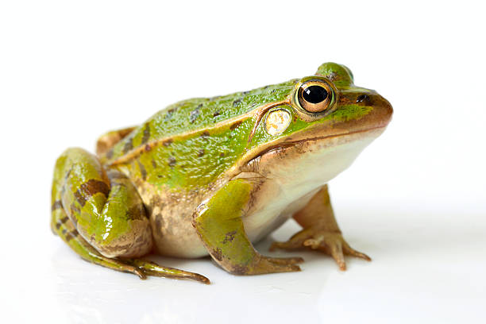

Upper part is connected with lower part,made up of graphite and called denuder,where sodium separates with amalgm

It is an intermolecuylar force of attraction form bnetween two molecules one of which contain partially charge H+1 and other contain partial O-1 charges as present in water.These charges attract two molecules,this force of attraction is called Hydrogen Bond
RANA TRIGNA is the specific name of spotted frog found commonly in our region.It is multicellular animal.It live as both water as well as on land.Its body is divided into head and trunk.There is no neck.Its body is made up of organ system with different organs. All organs are made of differnt tissues SUCH AS EPITHELIAL,glandular,muscular,nervous etc.
kidney are symmetrical bean shaped reddish brown structure locatedjust below the rib cage one of each side of thw vwertebral colun between the 12 thoraic cavity and 3rd lumber vertebrate
Upper part is connected with lower part,made up of graphite and called denuder,where sodium separates with amalgm